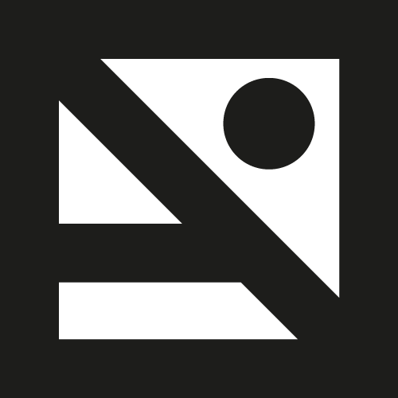

Mario Carballo Zama
Experience
- Co-founder of Punto y coma January 2013 - January 2014.
- Nyx Technology February 2013 - September 2014.
- HyperBeard Games May 2014 - present.
- Apps-O-Rama Febrary 2015 - present.
- Arlefreak as a freelancer.
Punto y coma
- Front and back end development forColegio Andersen.
Nyx Technology
- Front end development for the companies web page overhaul Nyxtechnology.
- Front end development for the 2013 Festival Internacional Cervantino.
- Interface design and development for the android app for the: Festival Internacional Cervantino 2013.
- Interface design and development for the android app for the: Festival Internacional de cine de Acapulco 2013.
- Development for the redesigned interface for the National Auditorium 2013 app.
- Development for the redesigned interface for the Lunario 2013 app.
- Back end development using wordpress platform for the author's Gabriel Zaid.
HyperBeard Games
- Front and back end development for HyperBeard Games website.
- Game development on Bouncing Dude.
- Game development on Palabraz.
- Game development on Muertitos.
- Game development on Space Scape.
Apps-O-Rama
Arlefreak
- Luis Quiroz front and back end development
- ASP front and back end development asp.mx
- Ixaya front and back end development ixayacondesa.com
- Monica Patiño front and back end development
- Casa virginia and back end development
- Delirio & Abarrotes and back end development
References & Contact
- hi@arlefreak.com
- github.com/Arlefreak
- lnkd.in/99e6bA
- nyxtechnology.com
- hyperbeard.com
- appsorama.com
- arlefreak.com
- colegioandersen.edu.mx
- festivalcervantino.gob.mx
- luisquiroz.me
- asp.mx
- ixayacondesa.com
- casavirginia.mx
- delirio.mx
Education
- B.D. in Digital Animation at Universidad Panamericana campus Ciudad de México.
- Currently majoring in Project Administration at Universidad Panamericana campus Ciudad de México
Languages
- Spanish: Native speaker
- English: Passed TOEFL test in 2010
- French: Intermediate level I
Skills
Front End
- Html5
- Markdown
- Css3
- Jquery
- AngularJS
Back End
- Django
- Wordpress
- Shopify
- NginX
- Systemd
Android Development
Video game development
- Unity
- Phaser.js
- Corona SDK
Programming languages
- C#
- Java Script
- Bash
- Python
- Lua
- Java
Version Control System
Agile Software development
Text Editors
Design
*While having no formal training or education in design, I have learnt to use the following programs on my own:*
- Adobe Suite
- Autodesk Maya
- Blender
- Gimp
- Inkscape
System admin